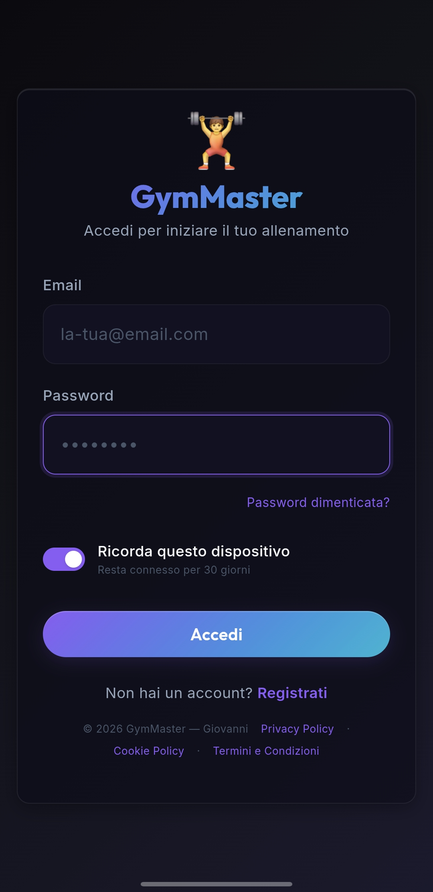
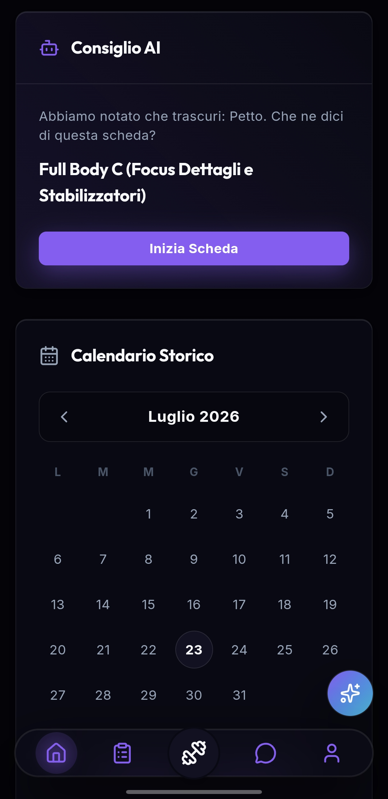
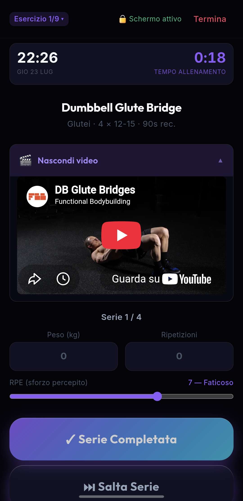
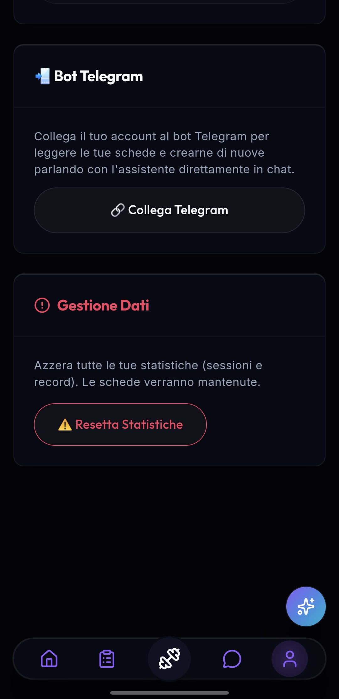

Workouts, even offline
A phone-first workout screen with rest timer, load suggestions that explain themselves, warm-up ramps and drop sets. Sets are saved on the phone and sync when the signal comes back.
A self-hosted web app for your gym. Members log workouts from their phone, even without signal, and follow their progress; trainers manage clients and plans; everyone gets chat, gym crowd levels and a Telegram bot.
A progressive web app that installs on the home screen, sends push notifications and updates itself.
A phone-first workout screen with rest timer, load suggestions that explain themselves, warm-up ramps and drop sets. Sets are saved on the phone and sync when the signal comes back.
Muscles trained and recovering, exercise trends, estimated maxes, personal records, yearly activity and body composition. Warm-ups never inflate your volume.
Trainers manage clients, appointments, assigned plans, announcements and measurements. Members chat in real time with each other and with their trainer.
An optional Playwright scraper (off by default, every 6 hours when on) reads crowd levels from Google Maps, so the app can tell you when your gym is busier or quieter. Since October 2026 Google Maps no longer shows "Popular times" to visitors without an account, so the charts show the last data collected.
A grammY bot shows plans and stats and builds new plans step by step; a Gemini assistant knows your training history.
Passkeys or Argon2id passwords, rotating JWT refresh tokens, data export and account deletion. Runs on your own server with Docker Compose, and installs itself on every GitHub release.
A clean, unified UI for both web dashboard and mobile integrations.




You need Docker with Compose and Node.js 22 to build the frontend.
# Clone the repository
git clone https://github.com/giosci1994/webapp-palestra.git
cd webapp-palestra
# Settings: change passwords, JWT secrets, APP_URL and ORIGINI_CONSENTITE
cp .env.example .env
# Build the frontend (nginx serves frontend/dist)
(cd frontend && npm ci && npm run build)
# Start database, backend and nginx (bot and scraper are optional)
docker compose up -d --build db redis backend nginx
Then open http://localhost:6969 and sign in with the admin account from .env. Full guide in the README.
Check out our issues page or submit a PR on GitHub.